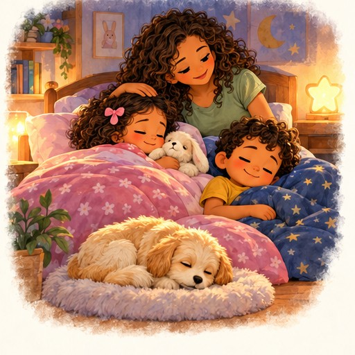
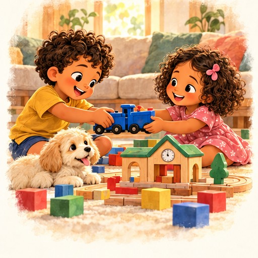
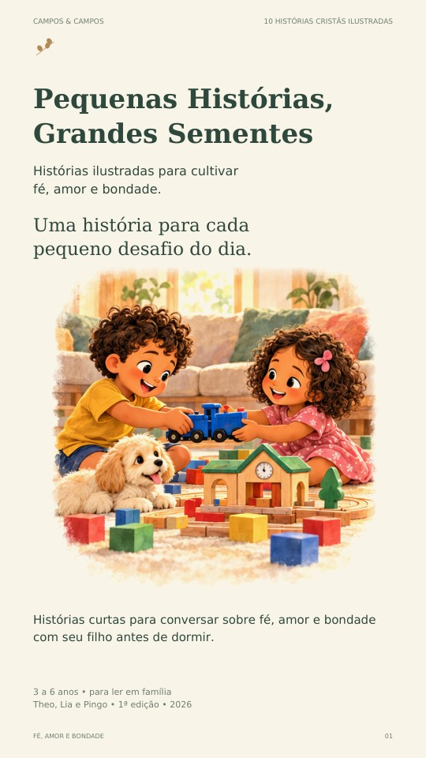

Escolha pelo dia
Encontre uma situação parecida com o que vocês viveram. Ou escolham só pela curiosidade.
PARA LER EM FAMÍLIA · 3 A 6 ANOS
Histórias curtas para conversar sobre fé, amor e bondade com seu filho antes de dormir.
Conheça as histórias10 histórias cristãs ilustradas · Ebook em PDF

NEM TODO DIA TERMINA COM TUDO RESOLVIDO
Um brinquedo disputado. Um barulho que assusta. Uma construção que caiu. Theo, Lia e Pingo vivem pequenas situações que ajudam a família a conversar com carinho — no tempo da criança.

UMA AMOSTRA DO LIVRO
Theo queria brincar mais um pouco. Lia também queria participar. Com a ajuda da mamãe, os dois encontram um combinado que abre espaço para a brincadeira.
“Foi difícil deixar a Lia brincar no começo. Mas gostei de brincar com ela.”
UM MOMENTO DE PRESENÇA
Encontre uma situação parecida com o que vocês viveram. Ou escolham só pela curiosidade.
A criança pode falar, apontar as imagens ou apenas ouvir. Não precisa responder a tudo.
Conversa, oração e ação para amanhã são convites. Se o sono chegar, vocês podem parar.

SEU NOVO COMPANHEIRO DE LEITURA
Histórias ilustradas para cultivar fé, amor e bondade.
Edição com escolha de personagens: as mesmas dez histórias com crianças e cachorro ou com uma família de coelhos. Vocês escolhem por onde continuar no próprio PDF.
R$ 29,90 Pagamento único · Ebook completo em PDF
Quero ler em famíliaCompra pela Hotmart · Acesso após aprovação do pagamento.
Produto digital em PDF. Nenhum livro físico será enviado.
NO TEMPO DA CRIANÇA
As histórias acolhem medo, tristeza e frustração. O adulto acompanha a conversa, respeitando o tempo de cada criança.
Priorize a história e as imagens. Uma pergunta curta, um gesto ou um desenho podem bastar.
Acrescente a conversa sobre a história e o versículo, quando houver interesse.
ANTES DE COMEÇAR
São histórias ficcionais do cotidiano, inspiradas em valores cristãos. Cada uma inclui um versículo ou trecho identificado da Almeida Revista e Corrigida (ARC), com uma reflexão.
Não. Vocês podem ler apenas a história. Conversa, oração e pequena ação são opcionais, conforme o interesse e o cansaço da criança.
Sim. Pais, mães, avós e outros cuidadores podem adaptar a conversa para a família. O livro foi pensado para leitura acompanhada.
Um ebook ilustrado em PDF, com 117 páginas, em formato vertical para leitura digital. As mesmas dez histórias aparecem com Theo, Lia e Pingo ou com a família de coelhos; não são vinte histórias diferentes. Pode ser lido no celular, tablet ou computador com um leitor de PDF. Não é um aplicativo e não inclui livro físico.
Após a aprovação do pagamento, você receberá as instruções de acesso pela Hotmart no email informado na compra. O ebook completo estará disponível para download em PDF.
O Sementinhas em Família é opcional e custa R$ 9,90 adicionais no checkout. Você recebe dois PDFs A4 de 23 páginas cada: ilustrado e econômico, com as mesmas 10 atividades, 20 cartões de pequenos gestos, 6 cartões de emoções e um jardim de lembranças. O kit acompanha esta edição de 117 páginas. Impressão e materiais por sua conta; recortes com um adulto.
UMA HISTÓRIA. UMA CONVERSA. UM PEQUENO GESTO.